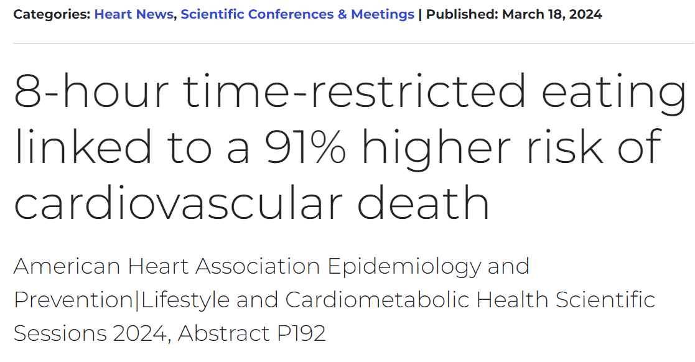
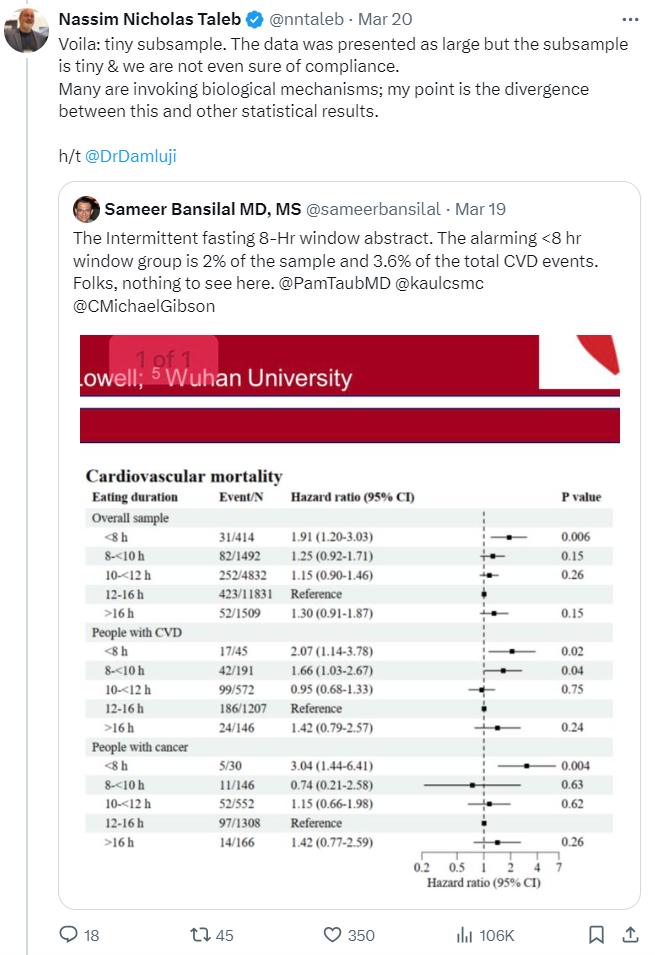
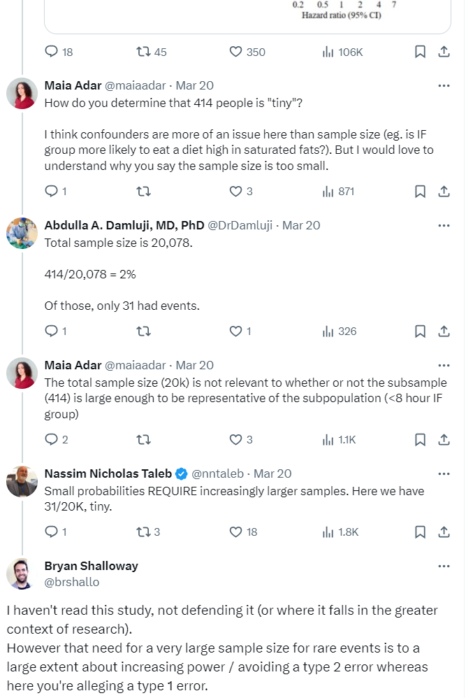
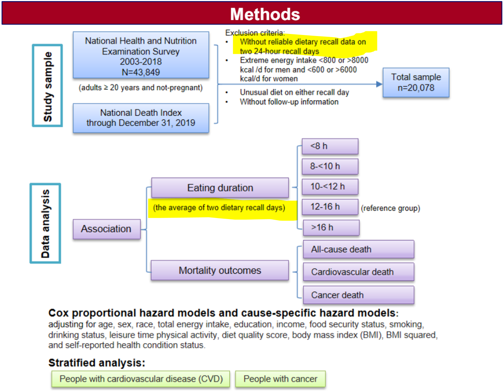
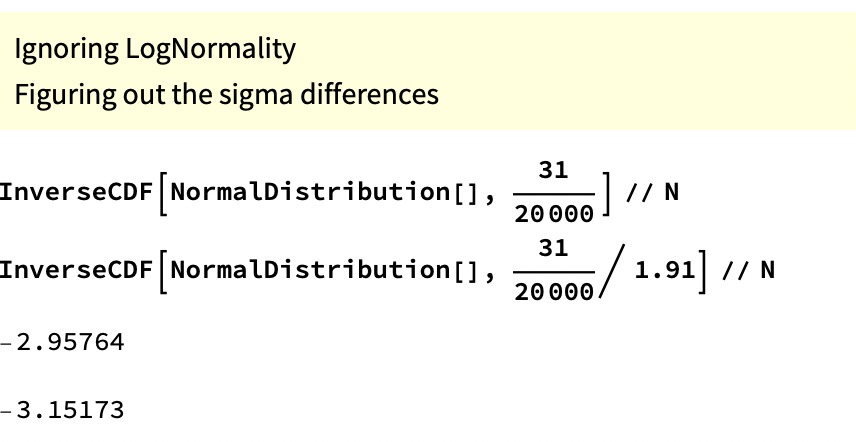

TLDR: Taleb’s pseudo-analytical support for his critique regarding sample size of rare events against an, albeit overhyped and maybe flawed study on Intermittent Fasting, seems specious.
Veritasium recently put out a video on “The Problem With Science Communication” that details how news outlets and science journalism gravitate to big headlines that are often misleading, overstate the actual findings, or are outliers that go against the weight of evidence in the field. The video doesn’t just fault news outlets but also suggests labs and research institutions are incentivized to put out punchier sounding press releases that summarize their findings in ways that are more likely to draw media attention to their work.
In March a headline grabbing summary of a study came-out regarding an association between Intermittent Fasting and cardiovascular mortality. You can google “intermittent fasting +heart” to get a sense of the media coverage. The American Heart Association’s release is largely representative1:

These reports were based on a research poster and abstract summarizing the methods and results of the study2. The actual paper had not yet been released. The specific part of the poster that drew so much attention was this table of results that showed a higher risk of cardiovascular mortality in those practicing intermittent fasting (eating within a less than 8 hour window) compared to the reference group:
Around this time I had just started reading Taleb’s book Antifragile. Early in the book he has an aside where he advocates for the health benefits of Intermittent Fasting3. Checking-out Taleb’s posts on X, I saw that he had a number of posts commenting on the recent study. He initially expressed surprise at the results4:
He goes on to make a few criticisms of the study. The only ones I want to discuss here are his complaints about sample size in relation to the event rate5:

He goes on to state that “small probabilities REQUIRE increasingly larger samples.”
While this issue of needing a larger sample with small probabilities is true, it’s not on its own a justification for throwing-out a small p-value on a post-hoc basis. The p-value simply represents (taking into account the sample size and the underlying variability / event rate) how likely it is you would get the observed results by random6. The need for a large sample size in the case of rare events often has more to do with increasing the power of your study to accomodate for the difficulty of detecting rare events (related to type 2 errors: ~failure to detect an effect when one actually exists) compared to the problem of falsely detecting an effect when one does not actually exist (~type 1 error) 7. Which I articulate in a reply on his thread:

Still, again excluding all concerns regarding study design, a typical researcher might question the validity of the p-value of 0.006 based on the fact that multiple tests were done within the study8 or critique the use of frequentist statistics and instead suggest using Bayesian approaches or nonparametric methods9. (As a reminder, we’re just looking at a table, not reading the paper, so we don’t know which approach or model the researchers used and whether we would approve of their methods.) However if you’ve read anything by Taleb you’ll know he rejects much of mainstream statistical inference10 and so his critiques tend to be more sweeping than just nitpicking the choice of statistical testing methodology.
While I found Taleb’s commentary overly harsh in the context of what we knew about the study, calling for a larger sample when studying rare events is generally a good idea and so my critique of his criticism at first felt pretty banal. However after reading Taleb’s follow-up tweets explaining his position, I got the feeling his approach to thinking about small sample sizes in the context of this study goes a bit off-the-rails. Take a moment to read his tweets below for yourself and see if you can follow his logic (and, in particular, how his calculations support it):
He packs a lot in here11 and after rereading it several times I think a lot of it falls somewhere between meaningless and misleading. First I will parse-out what he is saying (regarding “1” – as I’m only discussing his remarks concerning sample size and event rate) while offering some commentary:

A problem here is he’s taking a series of somewhat irrelevant conjunctive steps to build up these superficially tiny proportions. These tiny proportions are mostly just a function of intermittent fasting being relatively uncommon in the national survey this study is based on16.

This code is taking the proportions mentioned previously and then putting them in terms of percentiles of data on a normal distribution17. The 0.15 percentile would be at -2.96 standard deviations from the center and the 0.08 percentile would be at -3.15 standard deviations from the center – i.e. everything to the left of -2.96 represents 0.15% of the data and everything to the left of -3.15 contains 0.08%.
Visual representation:

He then states that a relatively small move to the right of just ~0.2 standard deviations (3.15 - 2.96) leads to a doubling of incidence18:
“In other words, a tiny probability {such as} .0008 blows up with tiny changes in assumptions and requires a much, much larger sample size. A tiny .2 sigma change doubles the incidence! It is fragile to parameter change. I am not even discussing the flaws in the setup.”19
However, this “small sigma change leads to doubling of the incidence” has little to do with the rare event rate or small sample size. Instead it’s mostly the arbitrary result of an inapplicable methodology that under essentially all circumstances would speciously support a claim of “a small sigma change leads to a big change of incidence.”
For example, let’s change the data to remove the “rare event rate” problem20 and increase the death rates by 5x so the death rate in the intermittent fasting group is now ~37% (and keep the same relative hazard with the reference level). The “difference in sigmas that ~doubles incidence” measure only goes up to ~0.2321:
# This is R code for the same types of calculations Taleb had previously done in Mathematica
c(qnorm( (31 * 5) / 20000), qnorm( (31 * 5 / 1.91) / 20000)) |> round(2)## [1] -2.42 -2.65Now let’s also remove his “the intermittent fasting subsample represents just 2% of the participants in the total study” problem by also multiplying this by 5x (so this hypothetical intermittent fasting group would now represent ~10% of survey participants and would have a death rate of ~37%, again keeping the same relative hazard with the reference level). Our “difference in sigmas that ~doubles incidence” measure still only goes up to 0.28:
c(qnorm( (31 * 5 * 5) / 20000), qnorm( (31 * 5 * 5 / 1.91) / 20000)) |> round(2)## [1] -1.77 -2.05Even if you’d made it so half of the 20,000 participants were in the intermittent fasting group (while keeping the 5x death rate – so 3,700 deaths in the intermittent fasting group) your “difference in sigmas that ~doubles incidence” would only have gone up to 0.4. This somewhat begs the question as to what “difference in standard deviations from reference level” Taleb would view as being substantive22 and also because this isn’t really a useful way to test this.
I am not trying to defend this study. I can appreciate the instinct to put down a (not even fully released) paper that has garnered an undue amount of attention and that may go against other results in the field23. It’s also interesting that the study doesn’t find a statistically significant difference in the “all cause mortality” rate for intermittent fasting. Furthermore, I don’t think raising question marks related to the sample size or rare event rate is necessarily a bad thing24. There are plenty of fair reasons to be skeptical. Where I think Taleb goes wrong is that rather than asking questions, or offering areas where he’d like to see further investigation, he rejects the results out-of-hand and then supports his position with what appears to be complicated nonsense25.
There were also plenty of headlines and articles that spoke broadly to the field of study rather than focusing disproportionately just on the initial findings of this unreleased study.↩︎
Links of which can be found at the AMA release↩︎
As part of a section where he describes the benefits of exposing the body to natural stressors.↩︎
He also noted that there didn’t seem to be any relevant financial conflicts of interest.↩︎
Which he suggests is all that is needed to dismiss the results, even if you ignore potential issues in setup: https://x.com/nntaleb/status/1770467069454073997↩︎
p-value of 0.006 suggests these results are unlikely to have occured by random selection.↩︎
Often the concern about sample size has more to do with study design. (Note also that this result is using a database from a national survey, this isn’t an experiment or something where they are able to control sample size.) If the thing you are measuring is rare, you will need a much larger sample in order to detect it. This increases your “statistical power”: the chance you will reject the null hypothesis if indeed you should reject it (i.e. get a small enough p-value). Given the underlying event rates and an aim to achieve a p-value of at least 0.05 – a common default – a sample size of 414 would indeed likely be too small, but for the reason that this wouldn’t give you enough statistical power to detect an effect (a common default for statistical power, i.e. chance of detecting a true effect, of at least 0.80).↩︎
and call for a corresponding adjustment of the p-value that takes this into account like a Bonferroni correction, an approach Taleb does mention in Antifragile.↩︎
It’s tough to know without actually trying it, my guess is p of 0.006 would have a good chance surviving any adjustments in statistical approach though.↩︎
Calling himself a “probablist.”↩︎
A lot of people on X will say something and leave the explanation and context unsaid, which is fine but can also lead to all kinds of misunderstandings and context collapse, particularly in Taleb’s case. Reading through the replies and quoted reposts it seems like it’s mostly Taleb fanboys interacting with his account rather than people meaningfully parsing his arguments.↩︎
My guess was this is, in part, just emphasizing that 2% is a small proportion of the total data… Or perhaps leaning into Taleb’s tendency to talk about things in terms of “tails.” Though it could be that I’m not following something.↩︎
For example if a participant ate everything within 5 hours on one of their recall days and then within 9 hours on another, the average of these would be 7 hours so they’d be grouped into the “<8 h” group (“<8 h” corresponds with Intermittent Fasting).↩︎
To increase the risk of detecting a false effect there’d generally have to be some kind of association between misclassification and the outcome, which is possible, but is a purely skeptical assertion. There is also the classic p-hacking problem where you just have a bunch of random results and only the “statistically significant” ones get picked-up for publication. This is a problem in research. My interest though is more in reviewing the explanations Taleb supports his argument with.↩︎
Speaking loosely, this part comes off as having a kind of false resemblance of what a p-value gets at, which loosely speaking, is sort of: “how unlikely is it that you would have seen 31 deaths when you would have expected to see just 16 based on the reference level and underlying data/attributes.”↩︎
A reason this might seem relevant is that if there is improper classification of people into their eating duration groups, as he suggests (mentioned previously above), then the relative rates could matter as subsamples bleed into one another; however as I note in the prior bullet, in this case that could reduce the chance of observing an effect – as it may be washed out by noise – not increase it / raise the risk of a Type 1 error (as he suggests). While there are also mechanisms where a type 1 error may become more likely… without further details on how misclassification occurred and its direction, it’s speculative to conclude how it would affect the results.↩︎
This seems like a strange thing to do for a number of reasons… but as mentioned previously, it’s not clear why, when grouping the subsamples into a population distribution, the intermittent fasting group should go at the tails rather than anywhere else in the distribution (where the density may differ).↩︎
or actually a 1.91x increase of incidence as that’s what he divided things by initially to manufacture this example.↩︎
He leans into this point, asserting that he can dismiss the results without even considering other potential flaws in the setup that are discussed elsewhere.↩︎
This study is looking at death rates of ~3.5 to 7.5% not the “black swan” events that Taleb writes so much about but still somewhat rare.↩︎
The incidence rate is still roughly doubled (1.91x) which makes sense as the relative incidence rate here is just a product of dividing by the hazard ratio.↩︎
A common cut-point in traditional statistical analyses is to say if something is ~2 standard deviations from the reference level it is “statistically significant.” However Taleb’s approach obviously isn’t a statistical test and it’s not clear what level of sigma differences Taleb would have said, “OK, that’s a reliable result.”↩︎
I don’t know anything about Intermittent Fasting or the relevant research so can’t speak to that↩︎
I’m somewhat hesitant to make a purely skeptical “well if you just move some of the observations around” hypothetical but it is indeed the case that if you move maybe somewhere between 7 and 14 of those cardiovascular deaths out of the “Intermittent Fasting” group and into another group you would likely no longer see a statistically significant result. (I don’t know exactly how many observations you’d need to move as I don’t have access to the model or the underlying data – that has things like censoring information and the attributes associated with each observation – which would be needed to do a sensitivity analysis and provide a precise review of how resilient that p value of 0.006 actually is). While I don’t think the “poor classification into groups” mechanism Taleb suggests is very likely to add to the risk of Type 1 errors… it is indeed the case that studies of rare events tend to be more sensitive and reminding people of that isn’t a bad thing.↩︎
Taleb has a story in Antifragile where he derides his business school professors by saying how he would essentially trick them into giving him better grades by adding a bunch of obfuscative pseudo-analytical jargon. I couldn’t shake the thought that maybe there is a little bit of that here. However, giving him the benefit of the doubt, I think it’s more likely that Taleb, being a prolific and highly opinionated poster, just didn’t think things through that much on this one. Another part of me wonders if I’m missing something and his “difference in sigmas” methodology does actually support his point in some meaningful way.↩︎